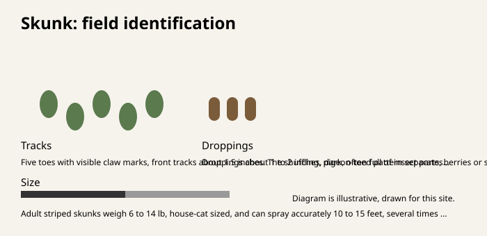
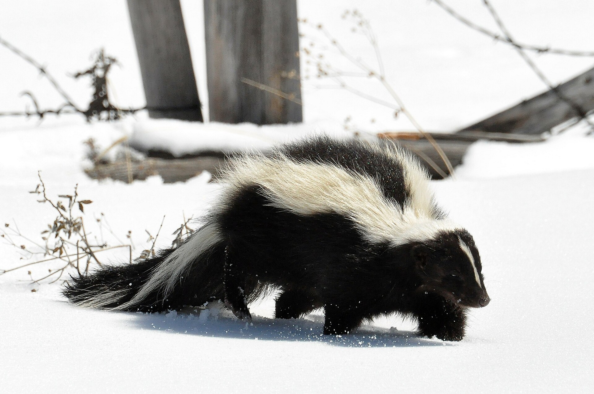
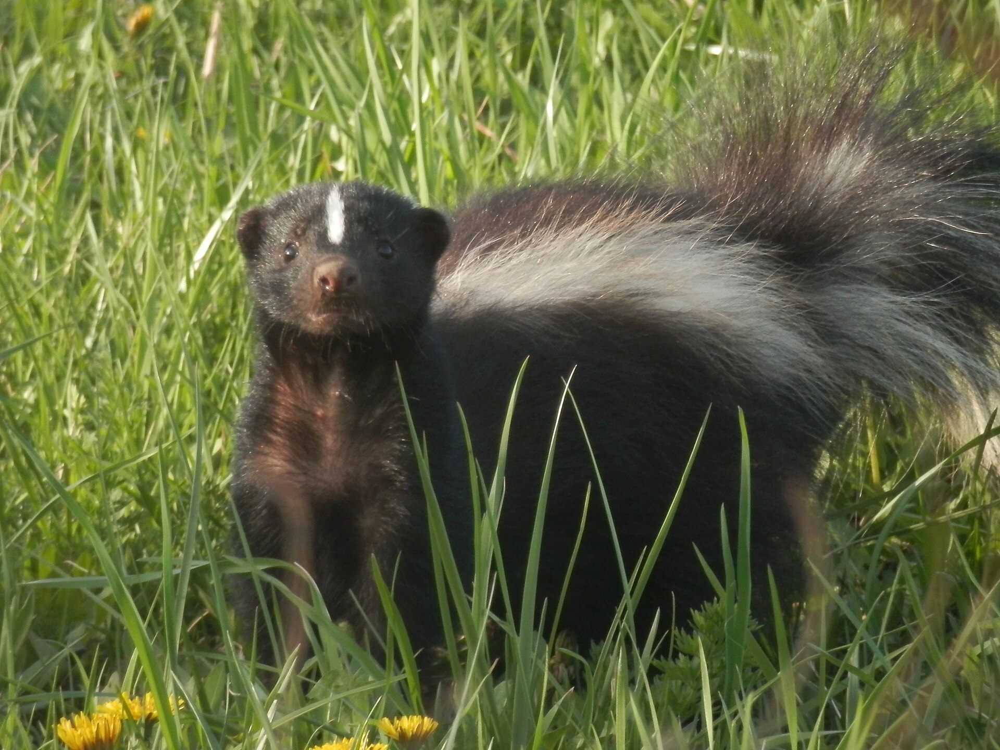

Animal guide - upstate New York
Skunk Removal in Upstate NY
You usually smell a skunk den before you see it, and your dog usually finds it before you do. Striped skunks den under porches, decks, sheds and raised foundations all over upstate New York, close to grubs, garbage and pet food. The whole job turns on one skill: getting the skunk out without it spraying the underside of your porch. This page covers signs, seasons, the law, no-spray eviction, and what it costs.
What are the signs of a skunk problem?
- A lingering skunk smell around a porch, deck or shed, strongest at dawn
- Cone-shaped holes dug in the lawn overnight, where grubs were hunted
- A gap dug under porch lattice, a shed edge or a low deck, with smooth soil at the entry
- Tracks in mud or snow: five toes with claw marks, in a shuffling pattern
- Dogs coming in sprayed, usually late evening, near the same corner of the yard
- Scratching or soft thumping under a porch floor in spring, when kits are present


Five toes with visible claw marks, front tracks about 1.5 inches. The shuffling, pigeon-toed pattern separates skunks from opossum tracks. Droppings about 1 to 2 inches, dark, often full of insect parts, berries or seeds, usually near the den entry or along a fence line. Adult striped skunks weigh 6 to 14 lb, house-cat sized, and can spray accurately 10 to 15 feet, several times in a row.
What damage do skunks do inside a home?
Skunks are gentle on houses and hard on lawns and noses. A denning skunk does little structural damage beyond enlarging the gap it uses, but a foraging skunk can dig up a grub-heavy lawn in cone-shaped holes night after night, and a den under a porch vents odour into the home every time the animal is startled. The expensive scenario is a spray event in an enclosed space, under a porch or inside a crawl space, where the smell soaks timber and soil and lingers for weeks. Prevention, a screened and buried barrier, is cheap by comparison.
How do skunks behave through the New York year?
Skunks are nocturnal, mild-mannered and nearsighted, which is why most sprays happen when a dog rushes them. They mate in February and March, and kits are born in May and June, staying in the den for their first weeks. A mother under a porch in June is raising a family, and the den clears on its own schedule unless it is handled properly. In winter, skunks den up for the coldest stretches, sometimes communally, and emerge on mild nights. They do not climb, so every skunk problem is a ground-level problem.
February and March are mating season, when roaming males raise the spray count. May and June are kit season under porches, and eviction plans change to keep the family together. Late summer is the best screening season, once young are independent and dens can be closed before winter. October through March, skunks den up under structures for warmth, and a winter den under a heated home's foundation is common. The pre-winter barrier job, done in fall, prevents most spring complaints.


Are skunks a health risk to my family or pets?
Skunks are a rabies vector species in New York, so distance is the rule, and a skunk that is active in daylight, staggering or unusually tame should be reported, not approached. Most skunk encounters are far more ordinary: a sprayed dog, handled with the peroxide, baking soda and dish soap mix, worked in before any water, and never tomato juice, which mostly masks the smell for human noses. Skunk droppings can carry leptospirosis, one more reason den cleanup under a porch is glove work, and pets' water bowls should not sit by a den.
What does New York law say about skunk removal?
Skunks sit on New York's rabies vector list, and their nuisance removal runs through DEC-licensed operators under the same framework as raccoons. Transport and relocation of rabies vector species is restricted, which is why on-site eviction is the standard outcome: the skunk leaves through a one-way door, the den is screened, and the animal continues in the territory it knows. Homeowners should also know that skunks get a measure of legal protection as wildlife, so unlicensed lethal control is not a lawful shortcut, quite apart from being the surest way to get sprayed.
Can I handle skunk removal myself?
Habitat DIY helps: grub treatment for the lawn, no pet food outside, secured garbage, and removing wood piles against the house. Den DIY mostly does not. The standard mistakes are blocking the hole in daytime while the skunk sleeps inside, which guarantees a trapped, spraying animal, and scattering mothballs, which are illegal to use this way in New York and do not work. One-way doors and low-stress live trapping, timed after a kit check, are the methods that end with no spray and no return.
One last thing on choosing help. Get the inspection findings in writing, with photographs of each entry point, and get removal, sealing and cleanup as separate lines on the estimate. Ask what material closes each hole, because foam and caulk alone are not exclusion. And ask the season question out loud: if the timing is wrong for this species, an honest operator will tell you to wait, and offer the inspection and quote now so the work is ready the week the window opens.
How does humane skunk removal work, step by step?

Confirm the den and check for kits
The inspection finds the entry, reads tracks and soil, and establishes whether kits are in the den. A one-way door fitted over a den of young kits traps them inside, so the kit check decides the method and the timing before anything is installed.
Evict calmly with a one-way door or low-stress trapping
Skunks spray when startled, so the work is slow, quiet and done at dusk when the animal leaves to feed. One-way doors handle most dens. Where a door cannot fit, covered live traps and gentle handling keep the animal calm and the porch unsprayed.
Screen the opening with buried hardware cloth
Once the den is empty, the gap is closed with galvanised hardware cloth dug into an L-shaped footer underground, because skunks dig. A surface patch lasts one night against a motivated skunk. The barrier runs the full open side, not just the hole.
Deodorise and fix the attractants
The den area is cleaned and treated for odour, and the attractants that drew the skunk, pet food, open garbage, grub-heavy lawn, get addressed in the same visit, so the next skunk passing through finds no reason to stop.
In the local data
This is not a theoretical animal for these towns. Observers have logged 481 research-grade iNaturalist observations of the striped skunk (Mephitis mephitis) across the ten town areas this site covers, and the species was recorded in all 10 of the 10 areas.
Data: iNaturalist, 25 km radius per town, fetched November 2026.
How much does skunk removal cost?
| Service | Typical range | Notes |
|---|---|---|
| Inspection and entry-point survey | $150-$300 | Often credited toward the work when you proceed. |
| Single-animal humane removal | $300-$600 | One animal, one entry point, straightforward access. |
| Bat exclusion, full home | $800-$2,500 | Colony work: one-way valves, full seal, guano check. |
| Attic cleanup and disinfection | Quoted after inspection | Depends on droppings volume and insulation condition. |
A single skunk eviction typically sits in the $300 to $325 band seen in national pricing guides for one animal, inside the wider single-animal range. The barrier work is the variable: a short porch side screens cheaply, while a full deck perimeter with a buried footer is quoted by the foot after measurement.
These are typical market ranges for upstate New York, published so you can sanity-check any quote. They are not a quote for your home: access, entry count, young in the den and cleanup volume move the real number, which is why the inspection comes first and the estimate is written.
Skunk removal in your town
The method on this page is state-wide, but the animal pressure, housing stock and season are local. These town pages combine the skunk method with each town's housing, waterways and cost notes, including sub-services like attic, chimney and under-deck work, babies, damage repair and emergencies.
Ithaca Binghamton Poughkeepsie Kingston Newburgh Utica Saratoga Springs Watertown Auburn Elmira
Skunk removal questions, answered
How much does skunk removal cost?
A single skunk removal typically falls between $300 and $600 as a market range, with straightforward single-animal jobs often landing around $300 to $325 based on published national pricing. The den barrier is separate: screening a porch side with buried hardware cloth is quoted by length and depth after the inspection. Emergency and dead skunk calls price differently, so ask for the line items in writing.
Is skunk removal humane? Does the skunk get sprayed or killed?
Done properly, the skunk walks out on its own through a one-way door at dusk and is neither sprayed nor harmed. Calm is the whole technique: no chasing, no dogs nearby, no sudden noise. Licensed operators in New York work under rules that restrict relocating rabies vector species, so on-site eviction plus a buried barrier is the standard humane outcome: the skunk keeps its territory and loses its den.
Can I use repellents or mothballs to get rid of a skunk?
Mothballs are a persistent myth and a legal problem: using them outdoors as a repellent is an off-label pesticide use, and they do not move a denning skunk anyway. Granular repellents and lights show weak, short-lived results at best. What works is boring: remove food attractants, and once the den is empty, screen it with buried hardware cloth. A skunk cannot argue with a physical barrier.
What should I do if my dog gets sprayed by a skunk?
Act before the spray oils set, and keep the dog outside if you can. Mix one quart of 3 percent hydrogen peroxide, a quarter cup of baking soda and a teaspoon of liquid dish soap, work it through the coat avoiding the eyes, leave it five minutes, then rinse. Tomato juice mostly perfumes the dog. Repeat the mix if needed, and check the yard at dusk for the den your dog found.
How long does skunk removal take?
A simple one-way door eviction usually clears in two to four nights, since the skunk leaves nightly to feed and cannot re-enter. Den screening follows once the den is confirmed empty, often in the same week. Kit season adds patience: a mother with young kits may need a week or more so the family leaves together, and rushing that step is how kits end up trapped and the job turns into a rescue.
How do I stop skunks denning under my porch every year?
Break the pattern physically and remove the invitation. Screen every open side of the porch or deck with galvanised hardware cloth buried in an L-footer, not just last year's hole, because the next skunk digs at the weakest point. Then remove the food: no outdoor pet food, secured garbage, and grub control on the lawn. A screened, food-free porch stops appearing on skunk route maps within a season.
Do you use poison for skunks in the attic or around the home?
No. Poison is not part of humane skunk work on this site, and for good reason. A poisoned animal usually dies somewhere unreachable, in a wall, a flue or under a floor, and the entry point stays open for the next animal anyway. Eviction, one-way doors where they fit, live capture where they do not, and then sealing solves the problem at the structure, which is where it actually lives.
Will you seal the entry points, or just remove the animal?
Sealing is the point of the job, and any quote that only covers removal is half a quote. The process here runs in order: inspect and map every entry, evict or capture the skunks, confirm the space is empty, then close each opening with materials the animal cannot chew, dig or pry through. Removal without exclusion is a short rental of an empty attic, and the next tenant rarely waits a full season to move in.
Are wildlife removal operators licensed and insured in New York?
They should be, and you can check before anyone climbs your roof. Nuisance Wildlife Control Operators in New York work under a NYS DEC licence, carry insurance for roof and attic work, and should give you the licence details on request. The checklist is simple: licence, insurance, a written estimate with line items, and a method that starts with inspection and ends with sealing. An operator who cannot produce the first two has not earned the job.
How fast can a wildlife technician get to my home?
Response time depends on where in upstate New York you are and what the skunk is doing. An animal in the living space, a chimney or a wall void is treated as urgent and usually gets a same-day or next-day response across the towns this site covers. Attic evictions and barrier work are booked as inspections first, normally within a few days, and the written quote follows the inspection, not a guess over the phone.
How much does skunk removal cost in upstate New York?
The canonical bands on this site apply to every town: inspections run $150 to $300 and are often credited toward the work, a single-animal humane removal is typically $300 to $600, full bat exclusion runs $800 to $2,500, and attic cleanup is quoted after inspection because it depends on what the animals left behind. A single skunk eviction typically sits in the $300 to $325 band seen in national pricing guides for one animal, inside the wider single-animal range. The barrier work is the variable: a short porch side screens cheaply, while a full deck perimeter with a buried footer is quoted by the foot after measurement.